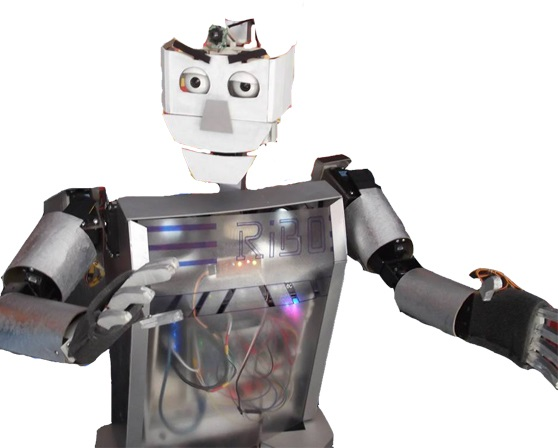
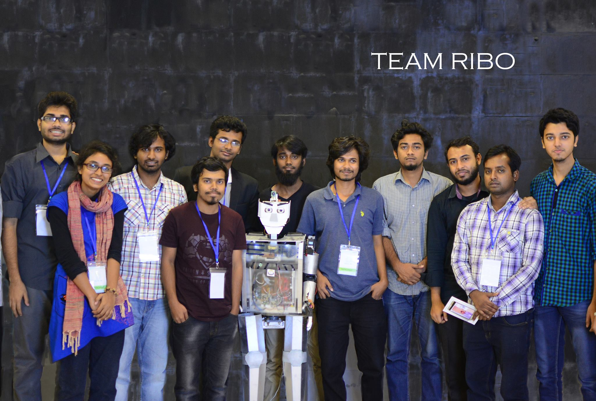
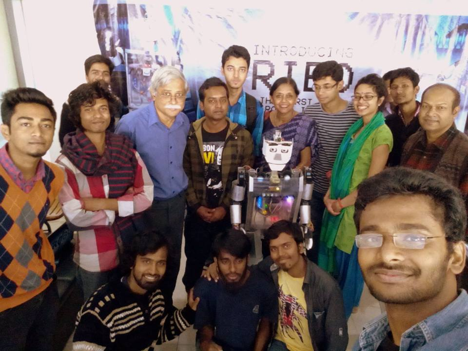

| Motivation: To make the fascination into a reality I teamed up with a robot enthusiasts people and formed a robotics club named RoboSUST. I lead the team and thanks to the excellent team-work and experience from previous projects we developed this robot within a month after getting hundred thousends BDT sponsorship from Bangladesh Science Fiction Society with the help of our great supervisor and famous science fiction writer Dr. M. Zafar Iqbal. We named the robot Ribo and we participated in the science-fiction festival where people were amazed to see such an artificial life talking and responding. Later, we participated in another four exhibitions across the country. It's a great fun to work in a team to achieve the same goal. |
 |
||||
|
Research & Publication
Robot's appearence and how it respond to people are one of the key criteria require for a robot to be considered as
social robot. This robot instantly response by turning its head toward the direction it is being called by name. It can make short conversation and perform various motion to entertain human. Its engaging behavior makes people feel supportive to interact with it. In all the five public exhibition across the country we conduct a survey ragarding social robot and 64.6% people showed interest to get this robot home where 80.7% people agreed that such robots would be suitable for working in home and office environments.
Best Poster Award at IEEE R10 HTC 2017
|
|
||||
|
Funding Bangladesh Science Fiction Society and RoboSUST.
The team |
|||||

